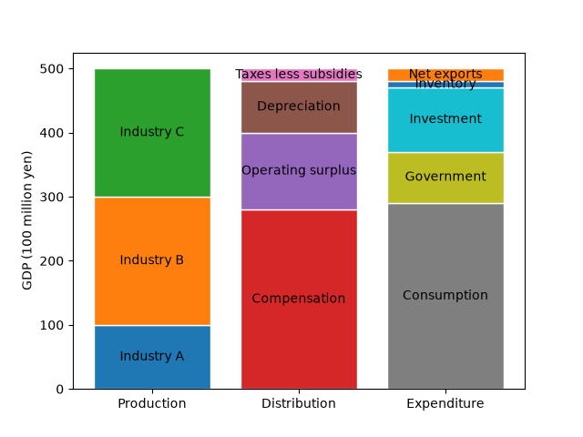
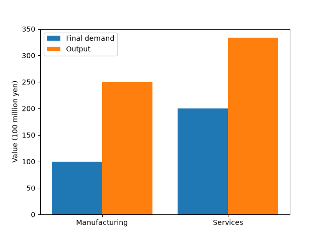

第 2 章: 三面等価と産業連関表¶
2.1 この章の地図¶
第 1 章では、GDP を、生産の側から（付加価値の合計として）計算しました。GDP は、分配（誰の所得になったか）と、支出（何に使われたか）の側からも、計算できます。この 3 つの値は、事後的に一致します（三面等価）。この章では、一致する理由（在庫品増加）を、関数とテストで確かめます。
もう 1 つの題材は、産業連関表です。産業どうしが、中間財を売り買いする関係を、表（行列）にしたものです。最終需要が決まったとき、各産業が、どれだけ作ればよいかを、連立方程式で求めます。ここで、NumPyを、初めて使います。

| 項目 | 内容 |
|---|---|
| 経済学の題材 | 三面等価（生産・分配・支出）、在庫品増加、産業連関表（縦計＝横計）、投入係数、レオンチェフ逆行列 |
| 使う Python の機能 | 関数、リスト、テスト（pytest）、NumPy（配列・行列の積・連立方程式） |
| 新しく導入するライブラリ | NumPy（この章で、必要な分だけ） |
| 完成形 | gdp_production、gdp_distribution、gdp_expenditure、inventory_change、is_three_way_equal、input_coefficients、leontief_inverse、output_for_demand、io_totals、is_io_balanced |
| ファイル | 実装: lib/chapter02/three_way.py、lib/chapter02/input_output.py、lib/chapter02/plot.py（図）／テスト: test/chapter02/test_three_way.py、test/chapter02/test_input_output.py、test/chapter02/test_plot.py（自分で書くときは、practice/chapter02/ に、同じ名前で作ります） |
| データ | なし（手計算できる小さな例だけ） |
経済学の式とコードの対応¶
| 経済学 | 式 | コード |
|---|---|---|
| 生産面の GDP | 産出額の合計 − 中間投入の合計 | gdp_production(output, intermediate) |
| 分配面の GDP | 雇用者報酬 + 営業余剰 + 固定資本減耗 + 間接税 − 補助金 | gdp_distribution(...) |
| 支出面の GDP | 民間消費 + 政府消費 + 総固定資本形成 + 在庫品増加 + 純輸出 | gdp_expenditure(...) |
| 在庫品増加 | 生産 − 販売 | inventory_change(production, sales) |
| 投入係数 | a_ij = 部門 j が部門 i から買った額 ÷ 部門 j の産出 | input_coefficients(transactions, output) |
| 生産量 | (I − A) x = f を解く | output_for_demand(coefficients, final_demand) |
| レオンチェフ逆行列 | (I − A)⁻¹ | leontief_inverse(coefficients) |
| 縦計・横計 | 横計 = 販売先の合計、縦計 = 投入の合計 | io_totals(...)、is_io_balanced(...) |
この記事の第 1 章（付加価値の合計としての GDP）と、第 1 シリーズの第 1〜7 章（関数・pytest・Matplotlib の棒グラフ）を、前提とします。
第 1 シリーズの第 9 章（NumPy）・第 11 章（三面等価）と題材が重なります。この記事は、独立して読めるように、自分のコードを持ち、NumPy も、この章で必要な分だけ説明します。第 1 シリーズの NumPy を、先に読む必要はありません。
2.2 準備¶
サンプルコードは、リポジトリの apps/macro-basics-programming/python/ にあります。環境の準備は、第 1 章の 1.2 節と同じです。NumPy は、uv sync で、すでに入っています。
cd apps/macro-basics-programming/python
uv sync
uv run pytest test/chapter02
40 passed
自分でコードを書くときは、practice/chapter02/ を作って、完成形と同じ名前（three_way.py・test_three_way.py など）のファイルに書きます。完成形（lib/ と test/）は、答え合わせ用です。 自分で書き終えてから、開いてください。
2.3 予想する¶
次の問いに、コードを見る前に、予想してください（紙に書いてもかまいません）。
三面等価（単位は億円）
- 分配面: 雇用者報酬 280、営業余剰 120、固定資本減耗 80、間接税 25、補助金 5 のとき、GDP は、いくつですか。支出面: 民間消費 290、政府消費 80、総固定資本形成 100、在庫品増加 10、純輸出 20 のとき、GDP は、いくつですか。2 つは、一致しますか
- 企業が、1 年間に、500 の財を作りました。消費・政府消費・設備投資・純輸出の合計（販売）が、490 のとき、在庫品増加は、いくつですか。販売が 520 だったら、いくつですか。どちらの場合も、支出面の GDP は、500 になりますか
産業連関表
- 2 つの部門（製造とサービス）があります。投入係数は、A = [[0.2, 0.3], [0.4, 0.1]]（行 i、列 j の値は、部門 j が部門 i から買う量の、部門 j の産出に対する割合）です。最終需要が [100, 200] のとき、各部門の生産量は、最終需要より大きくなりますか、小さくなりますか。いくつになりますか
- 次の表（億円）で、部門 1 の横計と縦計は、いくつですか。最終需要の合計と付加価値の合計は、どうですか
| 部門 1 への販売 | 部門 2 への販売 | 最終需要 | 産出（横計） | |
|---|---|---|---|---|
| 部門 1（製造） | 60 | 120 | 120 | ? |
| 部門 2（サービス） | 90 | 80 | 230 | ? |
| 付加価値 | 150 | 200 | ||
| 産出（縦計） | ? | ? |
2.4 三面等価と産業連関表の考え方¶
三面等価¶
GDP は、同じ経済活動を、3 つの側から、数えたものです。
| 面 | 数え方 | 式 |
|---|---|---|
| 生産 | 国内で生まれた付加価値 | 産出額の合計 − 中間投入の合計 |
| 分配 | 付加価値が、誰の所得になったか | 雇用者報酬 + 営業余剰・混合所得 + 固定資本減耗 + 間接税 − 補助金 |
| 支出 | 生産物が、何に使われたか | 民間消費 + 政府消費 + 総固定資本形成 + 在庫品増加 + 純輸出 |
分配面は、生産で生まれた付加価値が、すべて、誰かの所得か、減耗か、税になると見て、数えます。「間接税 − 補助金」は、価格に含まれる税から、価格から差し引かれる補助金を引いたものです。企業の所得にはなりませんが、市場価格で測る GDP には、含まれます。
在庫品増加¶
作ったものは、すべて、売れるとは限りません。売れ残りは、企業が、自分で買った（在庫への投資をした）と、見なして、支出に数えます。
在庫品増加 = 生産 − 販売
こう数えるので、支出面は、事前の計画がどうであっても、事後の結果として、生産面に一致します。販売が、作った量を超えて、在庫を取り崩したときは、在庫品増加が負になります。
産業連関表¶
産業連関表は、産業どうしの取引を、行列にしたものです。
- 行（横）: その部門の産出が、どこに売られたか（各部門への中間需要と、最終需要）
- 列（縦）: その部門が、何を、どれだけ買って作ったか（各部門からの中間投入と、付加価値）
同じ部門の、横計（販売の合計）と縦計（投入の合計）は、等しくなります。どちらも、その部門の産出だからです。
産出 = 中間需要の合計 + 最終需要（横計）= 中間投入の合計 + 付加価値（縦計）
全部門で足すと、中間需要と中間投入は、同じ額なので、最終需要の合計 = 付加価値の合計（= GDP）になります。
投入係数とレオンチェフ逆行列¶
部門 j が、1 単位を作るのに、部門 i から、いくら買うかが、投入係数 a_ij です。
a_ij = 部門 j が部門 i から買った額 ÷ 部門 j の産出
投入係数を並べた行列を A、各部門の生産量を x、最終需要を f とすると、部門ごとの需給の式は、次のとおりです。
x = A x + f（中間需要 + 最終需要 = 産出）
x について解くために、整理します。I は単位行列です。
(I − A) x = f、つまり x = (I − A)⁻¹ f
(I − A)⁻¹ を、レオンチェフ逆行列と呼びます。最終需要を、必要な生産量に、変える行列です。製造の最終需要が増えると、製造に部品を売るサービスも、生産が増えます。生産量が、最終需要より、大きくなる理由です。
2.5 プログラミング¶
NumPy を、なぜ使うのか¶
産業連関表の計算は、連立方程式です。2 部門なら、手で解けます。
0.8 x1 − 0.3 x2 = 100、−0.4 x1 + 0.9 x2 = 200
しかし、部門が 3 つ、10 になると、手では解けず、標準ライブラリだけで書くと、長くなります。NumPyは、配列と行列の計算を、短く、速く、書くための、Python の標準的なライブラリです。この章では、次の 4 つだけを、使います。
np.array(...): リストから、配列（ベクトル・行列）を作る。.shapeが、形A @ x: 行列の積。行列とベクトルの積も、同じ記号np.linalg.solve(M, f): 連立方程式 M x = f を解く。np.linalg.inv(M)は、逆行列np.allclose(a, b): 配列が、誤差の範囲で、等しいかz / x: 配列どうしの割り算は、要素ごとです。行列 z をベクトル x で割ると、各列を、x の対応する要素で割ります（ブロードキャスト）。たとえば z = [[10, 30], [40, 20]]、x = [100, 200] なら、z / x は [[0.1, 0.15], [0.4, 0.1]] です（1 列目を 100 で、2 列目を 200 で割る）。投入係数は、この計算ですz.sum(axis=0)は列ごとの合計（縦計）、z.sum(axis=1)は行ごとの合計（横計）(a < 0).any(): 1 つでも真の要素があるか。np.linalg.det(m)は行列式、np.linalg.cond(m)は条件数（大きいほど、解が不安定で、特異に近い）- 型ヒントの
ArrayLike（配列にできる値）とNDArray[np.float64]（実数の配列）は、読むための印で、動作には影響しません
実際に、動かします。
import numpy as np
a = np.array([[0.2, 0.3], [0.4, 0.1]])
f = np.array([100, 200])
print(a.shape, f.shape)
print((a @ f).tolist())
m = np.eye(2) - a
x = np.linalg.solve(m, f)
print(x.round(2).tolist())
print(np.linalg.inv(m).round(3).tolist())
print(np.allclose(m @ x, f))
print(0.1 + 0.2 == 0.3, np.allclose(0.1 + 0.2, 0.3))
(2, 2) (2,)
[80.0, 60.0]
[250.0, 333.33]
[[1.5, 0.5], [0.667, 1.333]]
True
False True
a @ fは、行列とベクトルの積で、[0.2 × 100 + 0.3 × 200, 0.4 × 100 + 0.1 × 200]=[80.0, 60.0]ですnp.eye(2)は、2 × 2 の単位行列 I で、np.eye(2) - aが I − A です。np.linalg.solve(m, f)が、連立方程式 (I − A) x = f の解[250.0, 333.33]を返します- 解を、元の式に戻した
m @ xが、fに一致するかは、np.allcloseで確かめます。小数の等しさに、==を使わないのは、第 1 章のpytest.approxと、同じ理由です（最後の行のとおり、0.1 + 0.2 == 0.3は、False） - 連立方程式は、逆行列を作ってかけるよりも、
np.linalg.solveで解くほうが、安定しています。逆行列は、「最終需要が 1 増えたとき、生産量が、どれだけ増えるか」を、知りたいときに、使います
Red: 三面等価のテスト¶
まず、三面等価の 3 つの面を、テストから書きます。生産面は、3 つの産業の産出額と中間投入、分配面と支出面は、予想で見た値です。
OUTPUT = [300, 500, 700]
INTERMEDIATE = [200, 300, 500]
def test_生産面のGDPは産出額の合計から中間投入の合計を引いた値() -> None:
assert gdp_production(OUTPUT, INTERMEDIATE) == 500
def test_分配面のGDPは4つの所得の合計() -> None:
gdp = gdp_distribution(
compensation=280,
operating_surplus=120,
depreciation=80,
indirect_taxes=25,
subsidies=5,
)
assert gdp == 500
支出面のテスト（民間消費 290・政府消費 80・総固定資本形成 100・在庫品増加 10・純輸出 20 で、500）も、同じ形です。gdp_production などが、まだないので、テストは失敗します（Red）。
Green: 3 つの面を実装する¶
3 つの面は、足し算と引き算です。入力の産業の数が違うときは、エラーにします（このテストは、test/chapter02/test_three_way.py にあります）。分配面は、補助金を引くことを、補助金が増えたときに、GDP が減るテストでも、確かめています。
def gdp_production(output: Sequence[float], intermediate: Sequence[float]) -> float:
"""生産面の GDP = 産出額の合計 − 中間投入の合計（付加価値の合計）。"""
if len(output) != len(intermediate):
raise ValueError("産出額と中間投入は、同じ長さ（産業の数）にする")
return sum(output) - sum(intermediate)
def gdp_distribution(
compensation: float,
operating_surplus: float,
depreciation: float,
indirect_taxes: float,
subsidies: float,
) -> float:
"""分配面の GDP = 雇用者報酬 + 営業余剰 + 固定資本減耗 + 間接税 − 補助金。"""
return compensation + operating_surplus + depreciation + indirect_taxes - subsidies
def gdp_expenditure(
consumption: float,
government: float,
fixed_capital_formation: float,
inventory: float,
net_exports: float,
) -> float:
"""支出面の GDP = 民間消費 + 政府消費 + 総固定資本形成 + 在庫品増加 + 純輸出。"""
return consumption + government + fixed_capital_formation + inventory + net_exports
import と補助関数（写すときに足す）
記事の抜粋には、import と、先頭が _ の補助関数・定数を、省いています。完成形のファイルの先頭にある、次の部分を、写してください。
lib/chapter02/input_output.py
import numpy as np
from numpy.typing import ArrayLike, NDArray
# (I − A) の条件数が、これを超えるなら、特異（逆行列がない）と見なす。
# 行列式は、部門の数が多いと、健全な経済でも小さくなる（0.5 の 50 乗は 9e-16）ので、
# 絶対値では、判定しない。
# 生産が成り立つ（付加価値が、すべて正の）経済では、行列式は、正になる
_MAX_CONDITION = 1e12
def _square(matrix: ArrayLike) -> NDArray[np.float64]:
"""正方行列として読む。違えばエラー。"""
array = np.asarray(matrix, dtype=float)
if array.ndim != 2 or array.shape[0] != array.shape[1]:
raise ValueError("正方行列（部門 × 部門）にする")
return array
def _vector(values: ArrayLike, size: int) -> NDArray[np.float64]:
"""部門の数 size の、ベクトルとして読む。違えばエラー。"""
array = np.asarray(values, dtype=float)
if array.shape != (size,):
raise ValueError(f"長さは、部門の数（{size}）にする")
return array
def _leontief_matrix(coefficients: ArrayLike) -> NDArray[np.float64]:
"""I − A を返す。A が不正、または I − A が特異なら、エラー。"""
a = _square(coefficients)
if (a < 0).any():
raise ValueError("投入係数は、負にならない")
m = np.eye(len(a)) - a
if np.linalg.det(m) <= 0 or np.linalg.cond(m) > _MAX_CONDITION:
raise ValueError(
"単位行列から投入係数を引いた行列が特異（行列式が 0 以下）で、解けない"
)
return m
lib/chapter02/three_way.py
from collections.abc import Sequence
在庫品増加で、事後的に一致する¶
3 つの面は、別々に計算した値です。一致する理由は、在庫品増加が、「生産 − 販売」で決まるからです。販売がどう変わっても、支出面の合計は、生産に一致する、という性質を、テストにします（inventory_change 自身の、生産 500・販売 490 で +10、販売が生産を超えると負、というテストは、test/chapter02/test_three_way.py にあります）。
@pytest.mark.parametrize("sales", [470, 500, 520])
def test_在庫品増加を含めれば支出面は販売によらず生産面に一致する(sales: float) -> None:
production = 500
inventory = inventory_change(production, sales)
# 販売 sales を、消費・政府消費・総固定資本形成・純輸出に分けて数える
expenditure = gdp_expenditure(sales - 200, 80, 100, inventory, 20)
assert expenditure == production
def inventory_change(production: float, sales: float) -> float:
"""在庫品増加 = 生産 − 販売。売れ残りは、在庫への投資として、支出に数える。"""
return production - sales
テストの中の sales - 200 は、販売のうち、政府消費 80・総固定資本形成 100・純輸出 20 を、除いた残り（消費）です。販売が、470 でも 500 でも 520 でも、支出面は、500 になります。販売が 520 のときは、在庫品増加が −20（在庫の取り崩し）です。
最後に、3 つの面が、一致するかを、判定する関数です。小数の誤差を許すので、最大と最小の差が、誤差以内かで、判定します（ずれたら False、1e-12 の誤差は許す、というテストを、先に書いています）。
def is_three_way_equal(
production: float,
distribution: float,
expenditure: float,
tolerance: float = 1e-9,
) -> bool:
"""3 つの面の GDP の、最大と最小の差が、誤差 tolerance 以内か。"""
values = (production, distribution, expenditure)
return max(values) - min(values) <= tolerance
産業連関表: Red¶
産業連関表のテストを書きます。投入係数と最終需要から、生産量を求める例は、手計算できます。(I − A) = [[0.8, −0.3], [−0.4, 0.9]] で、行列式は 0.8 × 0.9 − 0.3 × 0.4 = 0.6 です。x1 = (0.9 × 100 + 0.3 × 200) ÷ 0.6 = 250、x2 = (0.4 × 100 + 0.8 × 200) ÷ 0.6 = 1000 ÷ 3 ≈ 333.3 です。
A = [[0.2, 0.3], [0.4, 0.1]]
FINAL_DEMAND = [100, 200]
TRANSACTIONS = [[60, 120], [90, 80]]
TABLE_OUTPUT = [300, 400]
def test_最終需要から生産量を求める() -> None:
output = output_for_demand(A, FINAL_DEMAND)
assert output == pytest.approx([250, 1000 / 3])
def test_投入係数は中間取引を産出で割った値() -> None:
coefficients = input_coefficients(TRANSACTIONS, TABLE_OUTPUT)
assert np.allclose(coefficients, [[0.2, 0.3], [0.3, 0.2]])
産業連関表: Green¶
入力の検査（形・負の係数・特異）は、まとめて、小さな補助関数にします。np.linalg.solve は、特異な行列に、NumPy 独自のエラー（LinAlgError）を出しますが、経済学の言葉で、分かるエラーにするため、先に、行列式を調べます。行列式が、正でないときは、特異、または、生産が成り立たない（ある部門が、自分の産出より多くを、投入に使う）ので、同じエラーにします。
補助関数 _square（正方行列か）と _vector（長さが、部門の数か）は、形が違うときに、エラーにします。
_MAX_CONDITION = 1e12
def _leontief_matrix(coefficients: ArrayLike) -> NDArray[np.float64]:
"""I − A を返す。A が不正、または I − A が特異なら、エラー。"""
a = _square(coefficients)
if (a < 0).any():
raise ValueError("投入係数は、負にならない")
m = np.eye(len(a)) - a
if np.linalg.det(m) <= 0 or np.linalg.cond(m) > _MAX_CONDITION:
raise ValueError(
"単位行列から投入係数を引いた行列が特異（行列式が 0 以下）で、解けない"
)
return m
def input_coefficients(
transactions: ArrayLike, output: ArrayLike
) -> NDArray[np.float64]:
"""投入係数 a_ij = 部門 j が部門 i から買った額 ÷ 部門 j の産出。"""
z = _square(transactions)
x = _vector(output, len(z))
if (x == 0).any():
raise ValueError("産出が 0 の部門があり、投入係数を計算できない")
return z / x
def output_for_demand(
coefficients: ArrayLike, final_demand: ArrayLike
) -> NDArray[np.float64]:
"""最終需要 f を満たす生産量 x。(I − A) x = f を解く。"""
m = _leontief_matrix(coefficients)
f = _vector(final_demand, len(m))
return np.linalg.solve(m, f)
エラーの経路も、先にテストを書きます。形が違う・産出が 0・最終需要の長さが違う・投入係数が負・行列式が負のときのテストは、test/chapter02/test_input_output.py にあります。ここでは、特異な行列のテストだけを示します。
def test_単位行列から投入係数を引いた行列が特異ならエラー() -> None:
singular = [[1.0, 0.0], [0.0, 0.5]]
with pytest.raises(ValueError, match="特異"):
leontief_inverse(singular)
with pytest.raises(ValueError, match="特異"):
output_for_demand(singular, FINAL_DEMAND)
レオンチェフ逆行列と縦計・横計¶
逆行列は、最終需要が、1 増えたときの影響を、知るために使います（値は、下の確認で見ます）。縦計・横計は、表が、整合しているかの検査です。最終需要か付加価値を、1 だけずらすと、整合しなくなるテストも、あります。
TABLE_FINAL_DEMAND = [120, 230]
TABLE_VALUE_ADDED = [150, 200]
def test_横計は販売先の合計で縦計は投入の合計() -> None:
rows, columns = io_totals(TRANSACTIONS, TABLE_FINAL_DEMAND, TABLE_VALUE_ADDED)
assert rows == pytest.approx([300, 400])
assert columns == pytest.approx([300, 400])
def leontief_inverse(coefficients: ArrayLike) -> NDArray[np.float64]:
"""レオンチェフ逆行列 (I − A)⁻¹。"""
return np.linalg.inv(_leontief_matrix(coefficients))
def io_totals(
transactions: ArrayLike, final_demand: ArrayLike, value_added: ArrayLike
) -> tuple[NDArray[np.float64], NDArray[np.float64]]:
"""（横計, 縦計）。横計 = 販売先の合計、縦計 = 投入の合計。"""
z = _square(transactions)
f = _vector(final_demand, len(z))
v = _vector(value_added, len(z))
return z.sum(axis=1) + f, z.sum(axis=0) + v
def is_io_balanced(
transactions: ArrayLike, final_demand: ArrayLike, value_added: ArrayLike
) -> bool:
"""部門ごとに、縦計と横計が一致するか。"""
rows, columns = io_totals(transactions, final_demand, value_added)
return bool(np.allclose(rows, columns))
逆行列の読み方を、確かめます。製造の最終需要を、100 から 101 に 1 だけ増やしたときの、生産量の変化です。
from lib.chapter02.input_output import leontief_inverse, output_for_demand
a = [[0.2, 0.3], [0.4, 0.1]]
inverse = leontief_inverse(a)
print(inverse.round(3).tolist())
before = output_for_demand(a, [100, 200])
after = output_for_demand(a, [101, 200])
print((after - before).round(3).tolist())
[[1.5, 0.5], [0.667, 1.333]]
[1.5, 0.667]
- 2 行目は、逆行列の第 1 列 [1.5, 0.667] と、一致しています。製造の最終需要が 1 増えると、製造の生産は 1.5、サービスの生産は 0.667 増えます。製造が 1 増えるのに、製造自身は、1.5 増えるのは、製造の部品に、製造が必要だからです
予想の答え合わせ¶
予想した答えを、プログラムで確かめます。
from lib.chapter02.input_output import io_totals, output_for_demand
from lib.chapter02.three_way import (
gdp_distribution,
gdp_expenditure,
gdp_production,
inventory_change,
)
print("生産面:", gdp_production([300, 500, 700], [200, 300, 500]))
print("分配面:", gdp_distribution(280, 120, 80, 25, 5))
print("支出面:", gdp_expenditure(290, 80, 100, 10, 20))
for sales in (490, 520):
inventory = inventory_change(500, sales)
print("販売", sales, "在庫品増加", inventory, "支出面", sales + inventory)
output = output_for_demand([[0.2, 0.3], [0.4, 0.1]], [100, 200])
print("生産量:", output.round(2).tolist())
rows, columns = io_totals([[60, 120], [90, 80]], [120, 230], [150, 200])
print("横計:", rows.tolist(), "縦計:", columns.tolist())
print("最終需要の合計:", 120 + 230, "付加価値の合計:", 150 + 200)
生産面: 500
分配面: 500
支出面: 500
販売 490 在庫品増加 10 支出面 500
販売 520 在庫品増加 -20 支出面 500
生産量: [250.0, 333.33]
横計: [300.0, 400.0] 縦計: [300.0, 400.0]
最終需要の合計: 350 付加価値の合計: 350
- 1 つ目の問い: 分配面も支出面も 500 で、一致します。生産面（産出額の合計 1500 − 中間投入の合計 1000）も 500 で、3 つの面が、そろいます
- 2 つ目の問い: 販売が 490 なら、在庫品増加は +10（売れ残り）、520 なら −20（在庫の取り崩し）です。どちらも、支出面は 500 で、生産に一致します。販売が、どうであっても、在庫品増加が、差を埋めるからです
- 3 つ目の問い: 生産量は [250, 333.33] で、最終需要 [100, 200] より、大きくなります。部門どうしが、中間財を買い合うからです
- 4 つ目の問い: 部門 1 の横計は 60 + 120 + 120 = 300、縦計は 60 + 90 + 150 = 300 で、一致します。部門 2 は、400 と 400 です。最終需要の合計と、付加価値の合計は、どちらも 350（= GDP）で、一致します
図¶
三面等価の図と、産業連関表の図を、描く関数を、テストから書きます。棒の高さ・積み上げの位置・部分の名前の位置・軸の名前を、手計算の値と、確かめます。たとえば、三面等価の図では、積み上げた高さが、3 つの面で、すべて 500 になることを、確かめます（テストは、test/chapter02/test_plot.py にあります）。
描画のテストと実装（後回しにしても、学習は成り立ちます）
def plot_three_way(sides: Mapping[str, Mapping[str, float]]) -> Figure:
"""生産・分配・支出の GDP を、部分を積み上げた棒で描く。
面の名前 -> {部分の名前: 値}。三面等価が成り立てば、積み上げた高さは、すべて等しい。
"""
fig, ax = plt.subplots()
for position, (side, parts) in enumerate(sides.items()):
bottom = 0.0
for name, value in parts.items():
ax.bar(side, value, bottom=bottom, edgecolor="white")
ax.text(position, bottom + value / 2, name, ha="center", va="center")
bottom += value
ax.set_ylabel("GDP (100 million yen)")
plt.close(fig)
return fig
産業連関表の図 plot_io_output は、output_for_demand で、生産量を求めて、最終需要と並べる棒グラフです（lib/chapter02/plot.py）。

ノートブックで試す¶
数字を書き換えて、結果と図が変わるのを、手軽に確かめられます。apps/macro-basics-programming/python/notebooks/ch02_three_way_equivalence.ipynb を開き、「Parameters」のセルの数字（産出額と中間投入、分配面・支出面の各項目、投入係数と最終需要）を書き換えて、上から順に実行します。起動は、アプリのディレクトリで uv run --with jupyterlab jupyter lab notebooks/ です。
実行結果¶
uv run pytest test/chapter02
40 passed
2.6 規則で言うと¶
- 三面等価は、事後的な恒等式である。 在庫品増加が、計画と実績の差を、埋めるので、どんな経済でも、3 つの面は、一致する。一致しなかったら、統計か、計算が、間違っている
- 産業連関表は、部門ごとに、縦計 = 横計である。 全部門で足すと、最終需要の合計 = 付加価値の合計（= GDP）
- 連立方程式は、
solveで解く。 逆行列は、最終需要の変化の影響を、調べるときに作る
混同しやすい点を、表にまとめます。
| 混同しやすい点 | 違い |
|---|---|
| 事前と事後 | 企業が計画した在庫と、結果として実現した在庫は、違う。三面等価が一致するのは、事後（実現した値） |
| 縦計と横計 | 縦計は、投入（何を買って作ったか）。横計は、販売（どこに売ったか）。部門ごとに、どちらも産出に等しい |
| 投入係数とレオンチェフ逆行列 | 投入係数は、直接に必要な量。逆行列は、部品の部品まで含めた、直接と間接の合計 |
| 在庫品増加と在庫残高 | 在庫品増加は、フロー。在庫残高は、ストック。GDP の支出に入るのは、在庫品増加 |
このモデルが成り立たない場面¶
- 投入係数は、一定という仮定です。 実際には、価格や技術が変わると、係数も変わります。この章の生産量は、係数が、変わらないときの値です
- 供給の制約を、考えていません。 必要な生産量が、設備や人手の限界を超えると、この計算どおりには、なりません
- この章の表は、輸入と輸出を、省いています。 実際の産業連関表は、輸入を控除する列（または、行）を持ちます。この章では、最終需要は、純輸出を含む、国内の最終需要とみなしています
- 統計では、3 つの面が、完全には一致しません。 推計の方法が、面ごとに違うので、統計上の不突合が、残ります
2.7 練習問題¶
| 種類 | 問題 |
|---|---|
| 想起 | 本文を閉じて、gdp_distribution のテスト（雇用者報酬 280、営業余剰 120、固定資本減耗 80、間接税 25、補助金 5 で、GDP は 500）を書いてください |
| 生成 | 解説を見る前に、生産量から、それを満たす最終需要を求める final_demand_for_output(coefficients, output) を、テストから書いてください。生産量が [250, 1000 / 3] のとき、最終需要は、いくつになりますか |
| 多様 | 製造が、製造から買う割合（投入係数 a11）を、0.2 から 0.4 に増やすと、最終需要 [100, 200] のときの、製造の生産量は、250 より、大きくなりますか、小さくなりますか。サービスの生産量は、どうですか。先に予想してから、確かめてください |
| 交互 | 第 1 章の gdp_from_stages と、この章の gdp_production に、同じ産出額・中間投入（[300, 500, 700]、[200, 300, 500]）を渡すと、同じ値になりますか。さらに、gdp_production の値が、産業連関表の付加価値の合計と、同じになる場合を、テストにしてください |
解答（先に自分で取り組んでから、開いてください）
想起:
def test_分配面のGDPは500() -> None:
assert gdp_distribution(280, 120, 80, 25, 5) == 500
生成: 需給の式 x = A x + f を、f について解きます。f = x − A x です。
def final_demand_for_output(coefficients, output):
a = np.asarray(coefficients, dtype=float)
x = np.asarray(output, dtype=float)
return x - a @ x
def test_生産量から最終需要を求める() -> None:
a = [[0.2, 0.3], [0.4, 0.1]]
demand = final_demand_for_output(a, [250, 1000 / 3])
assert demand == pytest.approx([100, 200])
多様: 製造が、製造から、より多く買うので、製造の生産は、大きくなると予想できます。サービスも、製造の生産が増えて、サービスから、買う量が増えるので、大きくなります。
def test_製造の自己投入が増えると生産量が増える() -> None:
base = output_for_demand([[0.2, 0.3], [0.4, 0.1]], [100, 200])
more = output_for_demand([[0.4, 0.3], [0.4, 0.1]], [100, 200])
assert more == pytest.approx([150 / 0.42, 160 / 0.42])
assert all(more > base)
(I − A) の行列式は 0.6 × 0.9 − 0.3 × 0.4 = 0.42 になり、製造は 150 ÷ 0.42 ≈ 357.1、サービスは 160 ÷ 0.42 ≈ 381.0 です。係数が、少し変わるだけで、生産量は、大きく変わります。
交互:
def test_第1章の付加価値の合計と生産面のGDPは一致する() -> None:
output = [300, 500, 700]
intermediate = [200, 300, 500]
assert gdp_from_stages(output, intermediate) == 500
assert gdp_production(output, intermediate) == 500
def test_生産面のGDPは産業連関表の付加価値の合計に一致する() -> None:
transactions = [[60, 120], [90, 80]]
value_added_by_sector = [150, 200]
output = [300, 400]
intermediate = list(np.sum(transactions, axis=0))
assert gdp_production(output, intermediate) == sum(value_added_by_sector)
産業連関表の、中間投入（列の合計）を渡すと、生産面の GDP が、付加価値の合計 350 に一致します。
2.8 振り返り¶
- 三面等価が、在庫品増加によって、事後的に成り立つことを、販売が違う 3 つの場合で、説明できますか
- 産業連関表の、縦計と横計が、一致する理由を、説明できますか。全部門で足すと、何と何が、等しくなりますか
np.linalg.solveとnp.linalg.invを、どう使い分けますか
2.9 まとめ¶
- GDP を、生産（産出 1500 − 中間投入 1000）・分配（280 + 120 + 80 + 25 − 5）・支出（290 + 80 + 100 + 10 + 20）の 3 つの面から計算し、すべて 500 で一致した
- 在庫品増加（生産 − 販売）が、計画と実績の差を埋めるので、販売が 470 でも 520 でも、支出面は生産に一致する
- NumPy の、配列・行列の積（
@）・連立方程式（np.linalg.solve）・逆行列（np.linalg.inv）・np.allcloseを使った - 投入係数 [[0.2, 0.3], [0.4, 0.1]] と最終需要 [100, 200] から、生産量 [250, 333.33] を求めた。最終需要より大きいのは、部門どうしが、中間財を買い合うため
- 産業連関表の、縦計と横計が一致し、最終需要の合計と付加価値の合計が、どちらも 350 になることを確かめた
- 次の章では、物価指数（GDP デフレータ・CPI）と、景気・雇用の指標を、計算します。そこで、pandas を、初めて使います